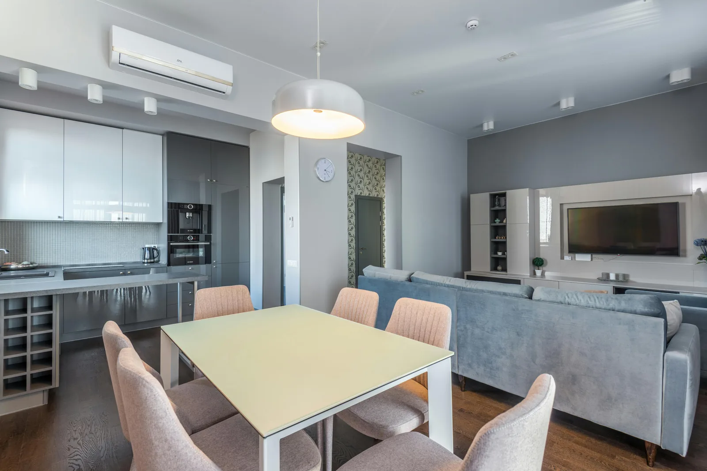

⚖️
Cadre clair
Déclaration, copropriété, durée de location, résidence principale ou secondaire : le cadre doit être vérifié avant de développer la performance.
Une location saisonnière performante ne repose plus seulement sur une annonce Airbnb ou Booking. Elle repose sur un dispositif complet : cadre clair, visibilité locale, valeur perçue, outils cohérents, canal direct et pilotage de la marge réellement conservée.
La location saisonnière reste un marché dynamique : Atout France indique une hausse de 14 % du volume de nuitées vendues entre janvier et avril 2025 sur l’ensemble du territoire. Cette progression confirme qu’il existe une demande. Mais elle ne garantit pas, à elle seule, une exploitation rentable, visible et durable.
Le propriétaire doit désormais piloter plusieurs dimensions en même temps : conformité, qualité de présentation, dépendance aux plateformes, visibilité locale, cohérence des prix, outils de synchronisation et capacité à capter une part de réservation directe.

Avant de parler d’outils ou de plateformes, il faut regarder le bien comme un actif touristique : il doit être conforme, visible, compréhensible, bien distribué et piloté avec une vraie lecture économique.
Déclaration, copropriété, durée de location, résidence principale ou secondaire : le cadre doit être vérifié avant de développer la performance.
Le voyageur cherche une destination, une station, une commune, un quartier ou une expérience. Le bien doit exister au-delà des plateformes.
Photos, description, immersion, environnement, preuves et cohérence du message influencent directement la décision du voyageur.
Calendriers, tarifs, channel manager et canaux doivent être cohérents pour limiter les erreurs et mieux piloter l’exploitation.
Le direct permet de réduire progressivement la dépendance aux OTA et de préserver davantage de marge lorsque le parcours est crédible.
La performance ne se limite pas au taux d’occupation : il faut lire la marge, les commissions, le prix moyen et la dépendance aux canaux.
Avant d’optimiser la visibilité ou la rentabilité, il faut comprendre les obligations de base. Le cadre dépend notamment du type de logement, de la commune, de la copropriété, de la durée de location et du statut du propriétaire.
economie.gouv.fr rappelle qu’une déclaration de début d’activité permet notamment d’obtenir un numéro
SIRET
et d’indiquer le régime d’imposition choisi.
Source : economie.gouv.fr
Une résidence principale ne peut pas être louée au-delà de 120 jours par an, ou moins si une commune fixe
un plafond inférieur dans la limite de 90 jours.
Source : economie.gouv.fr
La durée de location d’un meublé de tourisme ne doit pas excéder 90 jours consécutifs à un même client par
année civile.
Source : economie.gouv.fr
À partir du 20 mai 2026 au plus tard, la déclaration préalable de l’activité deviendra obligatoire dans toute la France via un portail unique. En copropriété, Service-Public rappelle aussi que de nouvelles obligations d’information du syndic et d’encadrement des règlements s’appliquent à partir de 2025.
Les plateformes peuvent générer de la demande. Mais si le bien reste invisible localement, mal présenté, sans canal direct, sans outils cohérents et sans lecture de marge, une partie du potentiel reste sous-exploitée.
Un bien peut être correctement loué tout en laissant de la valeur sur la table. La question n’est pas seulement “ai-je des réservations ?”, mais “est-ce que mon dispositif est vraiment optimisé ?”.
Quand Airbnb, Booking ou Abritel concentrent l’essentiel des réservations, le propriétaire subit davantage les commissions, les règles et les changements d’algorithme.
Sans site, page directe ou parcours propriétaire crédible, le voyageur n’a souvent aucune alternative lisible aux plateformes.
Le taux d’occupation ne suffit pas. Il faut mesurer les commissions, le prix moyen, la part OTA, le direct et la rentabilité nette.
Si le bien n’existe pas sur des recherches liées à la destination, il reste dépendant des filtres et classements internes des OTA.
Calendriers, prix, messages, canaux et disponibilités doivent être cohérents pour éviter les erreurs et gagner en sérénité.
Un bien mal présenté peut être sous-compris, sous-comparé ou sous-vendu, même s’il dispose d’un vrai potentiel.
LocPilot accompagne les propriétaires dans une logique de conseil, de visibilité locale, de structuration digitale, de configuration d’outils, de canal direct, de lecture de rentabilité et, si le cadre le permet, de certains volets opérationnels clairement définis.
Comprendre comment le bien est trouvé, comparé et perçu localement, au-delà de sa simple présence sur les OTA.
Créer ou renforcer un point d’entrée propriétaire pour réduire progressivement la dépendance aux intermédiaires.
Structurer les outils, les calendriers, les canaux, les automatisations et les règles utiles au pilotage.
Analyser la dépendance OTA, la marge conservée, la valeur perçue et les leviers prioritaires pour mieux piloter.
Distinguer ce qui relève du conseil, du digital, de l’opérationnel, de la décision propriétaire ou d’un cadre réglementé.
Améliorer la perception via les contenus, l’immersion, le drone, les preuves et la cohérence du parcours voyageur.
La loi Hoguet s’applique notamment aux personnes qui, de manière habituelle, se livrent ou prêtent leur concours à des opérations portant sur les biens d’autrui, dont la location ou sous-location, saisonnière ou non, en nu ou en meublé. C’est pourquoi le périmètre de mission doit rester clair, écrit et adapté.
Par défaut, le propriétaire reste responsable de ses annonces, prix, contrats, réservations, encaissements et obligations réglementaires.
Les actes liés à la location ou sous-location de biens d’autrui peuvent relever d’un cadre réglementé
selon
le périmètre réellement exercé.
Source : Légifrance
Toute intervention doit clarifier ce qui relève du conseil, des outils, de l’opérationnel, du propriétaire ou d’un cadre légal adapté.
Cette page ne constitue pas un conseil juridique personnalisé. Elle vise à clarifier les grands enjeux de structuration d’une location saisonnière. Pour une situation sensible, un professionnel compétent doit être consulté.
Cette page est la porte d’entrée du cluster. Les guides suivants permettent d’approfondir chaque pilier : direct, SEO local, outils et cadre d’intervention.
Réduire la dépendance aux OTA et préserver davantage de marge sur chaque séjour.
Lire le guideRendre le bien visible sur les recherches liées à la destination, la commune ou le type de séjour.
Lire le guideComprendre le rôle réel des outils de synchronisation et leurs limites.
Lire le guideOui. La location meublée de tourisme implique des démarches déclaratives, notamment la déclaration de début d’activité pour obtenir un numéro SIRET. La déclaration préalable en mairie deviendra obligatoire dans toute la France au plus tard le 20 mai 2026.
Non. Pour une résidence principale, la limite est de 120 jours par an, ou moins dans certaines communes. La durée de location ne doit pas dépasser 90 jours consécutifs à un même client par année civile.
Non. Les plateformes peuvent rester utiles, mais il est possible de travailler un canal direct, une visibilité locale, un site propriétaire et des outils de distribution mieux structurés.
Non. Un site direct doit être relié à une stratégie plus large : SEO local, contenu de destination, preuves, valeur perçue, cohérence tarifaire, outils et parcours de réservation clair.
Non. LocPilot intervient sur la visibilité locale, le canal direct, les outils, la structuration digitale, la lecture de rentabilité et certains volets opérationnels si le cadre légal le permet. Par défaut, le propriétaire reste décisionnaire et responsable de son bien.
Faisons un premier point sur votre localité, votre bien, votre dépendance aux plateformes, vos outils, votre visibilité locale et les leviers prioritaires pour mieux piloter votre exploitation.